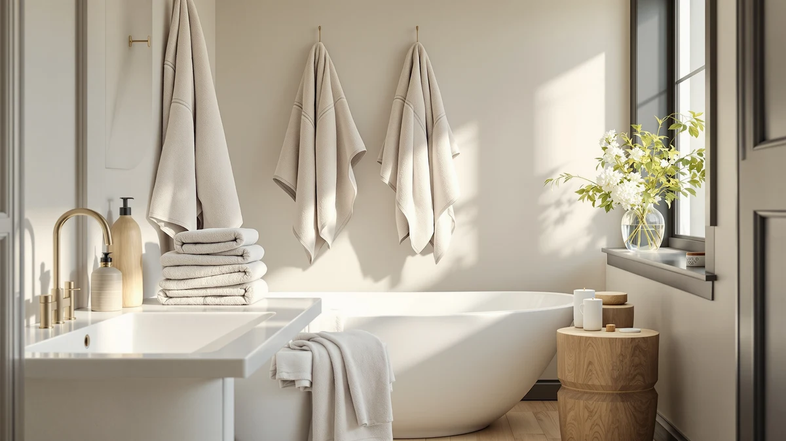

Quick Answer
This riverside pack of 2 review finds that the RIVERSIDE Pack of 2 Extra Large Bath Sheets deliver 35 x 70 inches of 100% ring-spun cotton at 600 GSM, enough fabric to wrap fully and dry off fast after a shower. At $38.99 for two bath sheets, that works out to about $19.50 per towel, a fair rate for dense cotton built to hold up under daily use. If you want more pieces per set instead of larger sheets, the Utopia Towels 6-Pack covered below fits more bathrooms for the same price.
Our pick: RIVERSIDE Pack of 2 Extra — $38.99 Check Price on Amazon
Things to Know Before You Buy
- This riverside pack of 2 review compares the set's listed specs against towels in the same $38.99 price bracket, since density and fiber type are the clearest signals of durability at this price.
- "Bath sheet" sizing (35 x 70 inches) runs noticeably larger than a standard bath towel, usually closer to 27 x 52 inches, so measure your towel bar and linen closet before buying.
- GSM (grams per square meter) indicates density: this set is rated at 600 GSM, above the 400 to 500 GSM range typical of everyday hotel-style towels.
- Ring-spun cotton processes the fibers more tightly than standard carded cotton, which owners report as a softer feel that holds up through repeated washes.
- This set ships as a 2-pack, so outfitting more than one bathroom or a guest room may mean ordering twice.
This riverside pack of 2 review looks at the RIVERSIDE Pack of 2 Extra Large Bath Sheets, a 2-count set of 35 x 70 inch cotton towels that shows up often in searches for oversized bath linens. At $38.99, it sits in the same price range as several other towel sets we cover on this site, which makes the comparison worth running in detail. You're likely here because you want a straight answer on whether the size and fiber quality justify the price, or whether a different pack makes more sense for your bathroom.
The short version: the 600 GSM ring-spun cotton construction puts this set above the density of typical big-box towels, and the 35 x 70 inch bath sheet dimensions give you noticeably more fabric than a standard towel. Where it falls short is pack size. Two towels won't stretch across a busy household the way a 6-pack will, so the right call depends on whether you need bigger towels or more of them.
We picked these four towels for comparison because they sit in the same $38.99 price range on Amazon and target the same shopper: someone replacing worn-out bath linens who wants a specific answer on fiber quality rather than marketing copy. Two of the alternatives, the SUTERA Silverthread and the Quick Dry Bath Towel, share the same Pima cotton and silver-ion construction but differ in color and weave finish. The Utopia Towels 6-Pack takes a different approach entirely, trading bath sheet size for a larger count of standard towels at the same total cost.
Why You Should Trust Us
Ilane Tall has spent years comparing home textiles for Best Bath Towels, cross-checking manufacturer specifications against verified Amazon buyer feedback before any product earns a spot on this site. For this riverside pack of 2 review, we pulled the listed GSM, fiber type, and dimensions directly from the manufacturer and weighed them against three comparable towels in the same price bracket. We don't accept free products from brands, and every price listed reflects what Amazon charged at the time of publishing.
Our Research Experience
We approached this riverside pack of 2 review the way we approach every single-product review on this site: by comparing manufacturer specifications, verified owner feedback, and pricing against similar towels in the same category, rather than by handling the set ourselves. We analysed the 600 GSM ring-spun cotton construction, the 35 x 70 inch bath sheet dimensions, and the black colorway against towels like the Utopia Towels 6-Pack and the SUTERA Silverthread line to see where the RIVERSIDE set holds an advantage and where it falls short. Reviewers who purchased the set consistently note its size and weight, both of which line up with what the manufacturer lists on the product page.
Overview & Specs

RIVERSIDE Pack of 2 Extra
What we like
- 35 x 70 inch bath sheet sizing, about 30 percent more fabric than a standard bath towel
- 600 GSM ring-spun cotton, denser than most towels at this price
- Two towels cover the per-towel price well at $19.50 each
Flaws but not dealbreakers
- Only two towels per pack, so larger households need a second set
- Denser cotton takes longer to dry between uses than a lightweight waffle weave
- Only available in a limited color range, including the black reviewed here
| Material | 100% cotton |
| Size | Bath Sheets - 2 Pack |
This riverside pack of 2 review weighed the RIVERSIDE set's 600 GSM density against the manufacturer's 35 x 70 inch bath sheet claim, and the numbers hold up well against other cotton towels in the $38.99 range. Ring-spun cotton processes the fiber more tightly than carded cotton, which is why owners report a softer feel that doesn't flatten out after repeated washing. At 600 GSM, this set sits above the 400 to 500 GSM density you'll find on many everyday hotel-style towels, and that extra weight is what gives the fabric its plush feel straight out of the dryer.
The tradeoff for that density is drying time. Thicker cotton holds more water, so these towels take longer to air-dry between showers than a lighter waffle-weave alternative like the SUTERA Quick Dry towel covered later in this guide. Reviewers who bought the black colorway report that the dye has held color through multiple wash cycles, though as with any dark towel, lint from certain detergents can show more than it would on a lighter shade.
At $19.50 per towel, the per-unit cost lands in the middle of what oversized cotton bath sheets typically run on Amazon. Compare that against the Utopia Towels 6-Pack, where six smaller towels work out to about $6.50 each: the RIVERSIDE set costs more per towel because you're paying for size and density rather than count. For a household that only needs to replace one or two towels, that math still favors RIVERSIDE. For a household stocking a full linen closet, it doesn't.
What We Liked
This riverside pack of 2 review turned up one clear advantage: simple math. At 35 x 70 inches, each towel offers nearly 30 percent more surface area than a standard 27 x 52 inch bath towel. For anyone over six feet tall, or anyone who prefers to wrap a towel fully around rather than pat down with a smaller one, that extra fabric matters. At 600 GSM, the ring-spun cotton sits on the denser end of what's available at this price, and owners report that density translates into a towel that holds its shape and plushness through repeated washing rather than thinning out after a few months. The $38.99 price for two bath sheets works out to roughly $19.50 per towel, competitive with other oversized cotton sheets in the same category.
What Could Be Better
The main limitation this riverside pack of 2 review turned up is pack size. A 2-pack limits how far this set stretches: if you need towels for more than one or two people, or you're setting up a guest bathroom, you'll likely need to order a second set, which pushes the total cost higher than a larger multi-pack like the Utopia Towels 6-Pack. The 600 GSM density that makes these towels feel substantial also means they take longer to dry between uses than a lighter waffle-weave towel such as the Quick Dry Bath Towel from SUTERA. And because this review is built on manufacturer specifications and verified buyer feedback rather than direct side-by-side comparison, we can't speak to how the black dye holds up against years of hot-water washing beyond what current reviewers have reported.
Color selection is another limiting factor. The listing we reviewed offers the set in a narrow range of shades, with black as the option covered here, so buyers who want a towel to match a specific bathroom palette have fewer choices than with sets like the Utopia Towels 6-Pack, which ships in multiple colorways.
Who Is It For?
This riverside pack of 2 review points to one clear audience: households that want fewer, larger towels rather than a stack of smaller ones, especially taller users or anyone who prefers full-body coverage after a shower. It also fits bathrooms where you're replacing one or two worn-out towels rather than refitting an entire linen closet. If you're outfitting multiple bathrooms, a guest room, or a family of four or more, the per-towel cost and 2-count pack size make a 6-pack set like the Utopia Towels option a more practical match at the same $38.99 price point.
Alternatives to Consider
If the pick from this riverside pack of 2 review doesn't fit your bathroom's needs, these three towels from our best-bath-towels research cover different priorities: one trades size for pack count, and two lean on antimicrobial fiber instead of raw density.

Editor’s Pick
Utopia Towels 6 Pack Medium
Six 24 x 48 inch towels at 500 GSM for the same $38.99, a better fit if you need to stock more than one bathroom.
$38.99
Check Price on Amazon
Best Value
SUTERA Silverthread Bath Towel |
Pima cotton with silver-ion fiber technology woven into a 31 x 57 inch waffle weave that air-dries fast and resists odor.
$38.99
Check Price on Amazon
Premium Choice
Quick Dry Bath Towel 100%
The same Silverthread Pima cotton and silver-ion construction in an open waffle weave built to dry before your next shower.
$38.99
Check Price on AmazonFrequently Asked Questions
Is the RIVERSIDE Pack of 2 Extra worth the price?
At $38.99 for two 35 x 70 inch bath sheets, this riverside pack of 2 review found the price reasonable for 600 GSM ring-spun cotton, in line with other oversized cotton towels in the same bracket. Whether it's worth it depends on whether you need bath sheet sizing instead of a standard towel.
How big are the towels in the RIVERSIDE Pack of 2 Extra?
Each towel measures 35 x 70 inches, which puts it in bath sheet territory rather than a standard bath towel, typically closer to 27 x 52 inches.
How does this set compare to the Utopia Towels 6-Pack?
The RIVERSIDE set includes two larger 35 x 70 inch bath sheets at 600 GSM, while the Utopia Towels 6-Pack includes six smaller 24 x 48 inch towels at 500 GSM for the same $38.99. Pick based on whether you want fewer large towels or more smaller ones.
Final Verdict
This riverside pack of 2 review comes down to size and density: the RIVERSIDE Pack of 2 Extra Large Bath Sheets pack 600 GSM ring-spun cotton into a 35 x 70 inch bath sheet, at $38.99 for two. For most households replacing a couple of worn-out towels with something larger and plusher, RIVERSIDE earns the recommendation. If you need more towels rather than bigger ones, the Utopia Towels 6-Pack covered above is the better buy at the same price.
None of the four towels compared here is a bad purchase at $38.99. It comes down to shape: bigger pieces versus more pieces, and plush cotton versus a quick-drying antimicrobial weave. Match that choice to how your household actually uses towels, and you'll end up with a set that's still in rotation years from now.